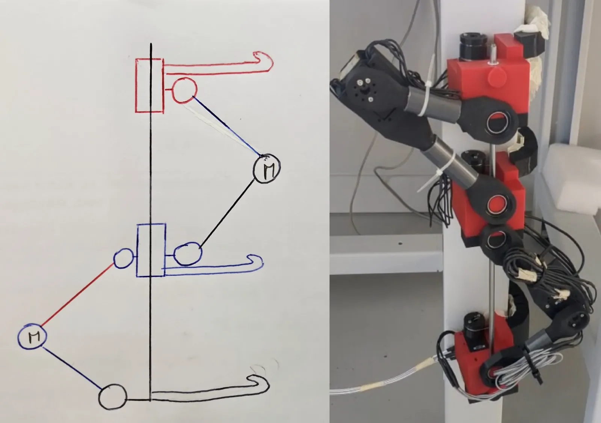
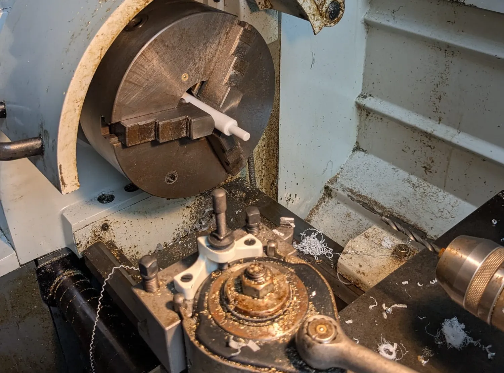
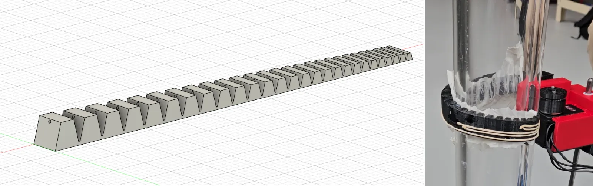
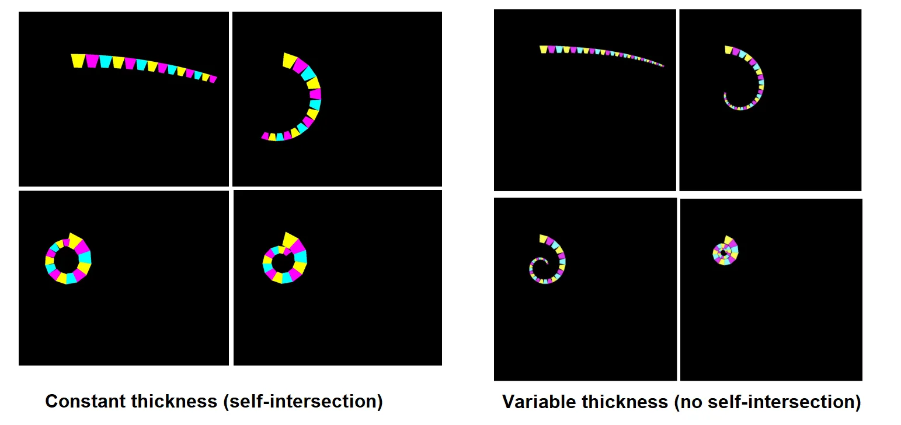

Context
In 2025, researchers from USTC published this paper about SpiRobs, an innovative polyarticulated tentacle design. Their design is based on many rigid trapezoid sections, connected by a sheet of viscoelastic material. The original intent was to use them as universal grippers for robots.
This research gave me the idea of trying to use similar tentacles for other tasks: namely, grabbing a pole to climb on it. As the tentacles are designed to be able to grab almost anything, it would make the robot able to climb supports of almost any shape and material.
Architecture
For stability, the robot needs to have at least 2 points of contact with the climbing support at all time. That means it needs at least 3 tentacles.
I settled for a 3 tentacles, 5 motors architecture. The movement is a 9-step sequence: one at a time, each tentacle is extended, then translated upwards, then retracted to grab the support again.


Translation Mechanism
The device consists of segments mounted on a cylindrical metal axis. By utilizing motors to manipulate the angle between the plastic rods connecting each segment, the system converts rotational motor movement into linear translation along the rod.
To ensure minimal friction, I machined plain teflon bearings on a lathe.


Tentacles: Practical Construction
The original SpiRobs relied on many trapezoidal modules glued to a sheet of viscoelastic material. Since I did not have access to such a material, I imagined a cheaper design, with the added benefit of simplified assembly. Each tentacle is entirely 3D printed in TPU, in one single piece including both the trapezoidal modules and the flexible sheet. For additional friction with the climbing support, tentacles are coated with a thin layer of latex. I made a Python script to automatically generate a Fusion 360 model of the tentacle with any number of segments.
To retract the tentacle, a motor rotates a small spool to pull on a fishing line that goes through the whole tentacle.


Tentacles: Geometry and Theoretical Model
As per the original SpiRobs paper, the trapezoid modules' dimensions are selected for the tentacle to retract into a logarithmic spiral. However, with a constant elastic layer, the tentacles were unable to retract properly because of self-intersection. To better understand this behavior, I designed and simulated a physical model. Each junction between two trapezoid modules is modeled as a torsion spring, and the state chosen by the tentacle is the one that minimizes elastic potential energy, subject to a geometric constraint because of the inelastic fishing line.
This simulation showed that for proper retraction, the elastic sheet needed to be thicker near the base of the tentacle. I incorporated this modification in my tentacle generation script, which allowed for perfect retraction every time.


Result
The prototype was validated on four distinct surfaces, including PVC, aluminum, and steel. It achieved a steady climb speed of 40 cm/min, successfully navigated both 5cm square wooden posts and 7cm rectangular steel beams.
The most important remaining problem is the durability of the tentacles: TPU tends to plastically deform over time, which causes a "shape memory" effect and makes the tentacles less effective after a few uses.